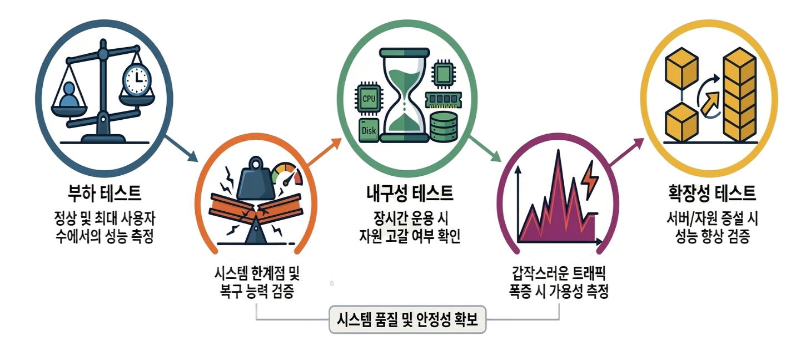

실증적 데이터 중심
직관이나 추측에 의존하지 않습니다. 모든 병목 현상과 튜닝 결과는 철저한 계측 지표(TPS, 응답시간, 리소스 추이)와 상관관계 분석으로 증명합니다.
END-TO-END PERFORMANCE ASSURANCE
엔포랩스는 안정적인 시스템을 위한 성능 검증 전문 크루로 구성되어, 단순 현상 확인을 넘어 데이터에 기반한 최적의 해안을 제공합니다.
COMPANY STORY
엔포랩스(Endpoint Lab)는 시스템 개발 이후 최종 검증하는 마지막 단계(ENDPOINT)와 성능을 끝없이 연구하는 연구소(LABS)의 철학을 담아 고성능·무중단 비즈니스 환경을 완성합니다.
엔포랩스는 안정적인 시스템을 위해 시스템 테스트와 진단을 통한 최적화를 목적으로 하는 성능 전문 엔지니어들의 모임입니다. 네트워크 에지부터 백엔드 데이터베이스에 이르기까지 모든 기술 접점(Endpoint)의 병목을 규명합니다.
수많은 대규모 차세대 프로젝트와 운영 환경에서 검증된 실전 노하우로, 엔포랩스를 찾아주시는 모든 고객님께 아래 세 가지를 반드시 약속드립니다.
| 기업명 | 엔포랩스 (Endpoint Labs) |
|---|---|
| 영문 표기 | Endpoint Lab (endpointlab.io) |
| 핵심 업종 | IT 시스템 성능 엔지니어링 / 컨설팅 / ITO 서비스 |
| 주요 사업 | 성능 테스트, 시스템 성능 점검·진단, AP·DB 튜닝, 성능/AA ITO, APM·부하테스트 솔루션 구축 |
| 기술 지원 | End-to-End Performance Assurance |
| 공식 문의처 | contact@endpointlab.io |
직관이나 추측에 의존하지 않습니다. 모든 병목 현상과 튜닝 결과는 철저한 계측 지표(TPS, 응답시간, 리소스 추이)와 상관관계 분석으로 증명합니다.
단순한 임계치 통과에 그치지 않고, 아키텍처가 감당할 수 있는 최적의 처리량과 초저지연(Ultra-low Latency) 환경을 끝까지 구현합니다.
일회성 조치로 끝나지 않도록 커스텀 모니터링 체계(JMeter·Scouter)와 운영 가이드라인을 함께 이식하여 고객사의 기술 자립을 돕습니다.
신규 오픈 전 대규모 부하 검증부터 운영 중 발생하는 복합 장애·지연 구간의 정밀 트러블슈팅을 수행합니다.
검증된 성능 엔지니어와 애플리케이션 아키텍트(AA)가 상주·반상주 형태로 시스템 표준화와 안정적 운영을 견인합니다.
검증된 오픈소스 도구를 고객사 운영 환경에 맞게 커스터마이징하고 사내 기술 지원 도구를 개발·공급합니다.
CORE CAPABILITIES
단순 리포트 제출이 아닌 실제 운영 환경에서 즉각 체감할 수 있는 성능 개선과 아키텍처 안정화를 수행합니다.
운영 중인 시스템의 잠재적 장애 요인을 미연에 방지하기 위한 주기적인 리소스·트랜잭션 정밀 점검
신규 시스템 오픈 전 목표 성능 검증 및 AS-IS 대비 TO-BE 시스템의 처리 용량·안정성 비교 검증
운영 시스템의 간헐적 지연·병목 이슈를 전 레이어에 걸쳐 추적하고 실행 가능한 개선 방안 도출
성능 전문가 ITO 지원을 통해 고급 기술 인력 확보 비용을 절감하고 상시 안정적인 시스템 운영 환경 유지
Slow SQL 및 비효율적인 실행 계획(Execution Plan)을 분석하여 쿼리, 인덱스 설계 및 DB 파라미터 최적화
시스템 아키텍처 표준화와 성능 최적화를 동시에 견인하는 전문 AA(Application Architect) 중심 IT 운영 관리
DIAGNOSTIC FRAMEWORK
성능 문제는 단일 레이어에서 끝나지 않습니다. 사용자 요청이 데이터베이스 응답으로 돌아오기까지 전체 파이프라인을 동일 타임라인에서 입체적으로 분석합니다.
장애 발생 조건, 동시 사용자 규모, 피크 시간대와 배포·변경 이력을 확인해 분석 범위를 구체화합니다.
애플리케이션, 시스템 리소스 및 DB 성능 지표를 동일한 타임라인 위에서 다각도로 교차 분석합니다.
원인별 튜닝안을 적용하고 동일 부하 조건에서 전후 성능을 비교해 개선 효과와 잔여 위험을 검증합니다.
일회성 조치로 끝나지 않도록 임계치, 상시 모니터링 지표와 개발·운영 가이드를 표준 문서화합니다.
PERFORMANCE TESTING ARCHITECTURE
단순히 많은 요청을 발생시키는 테스트가 아닙니다. 실제 업무 흐름과 사용자 행동 패턴(Think Time, Pacing, 집중 트랜잭션)을 반영한 시나리오를 설계하고 시스템의 임계 용량을 제시합니다.


PERFORMANCE SOLUTIONS
엔포랩스에서는 대상 시스템별 커스텀 플러그인 개발과 최적화를 통해 운영 환경에 꼭 맞는 성능 관리 솔루션을 구축합니다.

목적에 맞는 유연한 시나리오 설계와 대규모 부하 수행이 가능한 오픈소스 성능 테스트 소프트웨어입니다. 엔포랩스 자체 커스텀 플러그인 및 실시간 리포팅 체계를 함께 제공합니다.
Java 기반 웹 애플리케이션 및 OS 자원을 실시간 추적하는 오픈소스 성능 관리 시스템(APM)입니다. XLog 트랜잭션 프로파일링과 커스텀 알림 대시보드를 구축합니다.
엔터프라이즈 인프라의 SSL 인증서 만료 장애를 원천 차단하는 라이프사이클 자동화 관리 솔루션과 사내 기술 지원 효율을 극대화하는 맞춤형 유틸리티를 개발·공급합니다.
ENDPOINT R&D LAB
최적화 전후의 Core Web Vitals 및 처리 성능 차이를 직접 비교하고, 엔포랩스 엔지니어링 팀의 웹 애플리케이션 성능 최적화 개발 지침을 확인하세요.
모드를 전환하여 엔포랩스 최적화 적용 전후의 핵심 지표를 비교해 보세요.
본 지침서는 endpointlab의 성능 제일주의 기술 철학을 바탕으로 로딩 속도, 렌더링 반응성, 사용자 경험 지표를 극대화하기 위한 핵심 기준을 제시합니다.
loading="lazy"를 배제하고 fetchpriority="high" 및 preload를 적용합니다.scheduler.yield() 또는 마이크로태스크로 분할하여 메인 스레드 블로킹을 해소합니다.width, height 또는 aspect-ratio를 지정해 레이아웃 밀림을 방지합니다.defer 속성으로 파서 블로킹을 방지합니다.| 측정 항목 | 권장 기준 | 측정 방식 |
|---|---|---|
| LCP | 2.5s 이하 | Lighthouse / Web Vitals API |
| INP | 200ms 이하 | Chrome DevTools Performance Panel |
| CLS | 0.1 이하 | Lighthouse / Layout Instability API |
| Lighthouse Score | 98점 이상 | Chrome DevTools Audit |
| Total DOM Nodes | 1,500개 이하 | DOM Node Counter |
| Critical Resource Size | 200KB 이하 | Network Tab (Brotli Compressed) |
START A CONVERSATION
현재 겪고 있는 시스템 현상과 서비스 환경을 알려주세요. 엔포랩스 전문 엔지니어가 진단 범위와 적합한 진행 방식을 빠르게 검토해 안내드립니다.
contact@endpointlab.io ↗